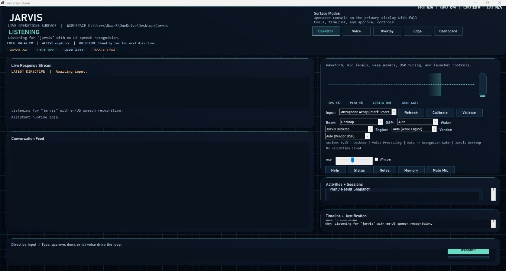
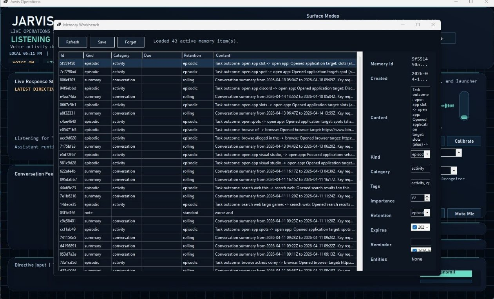
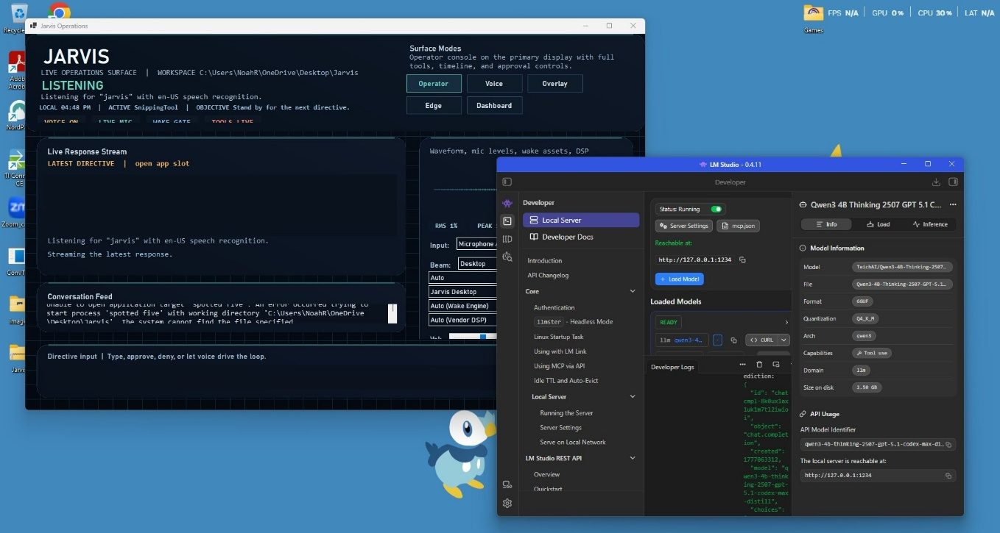
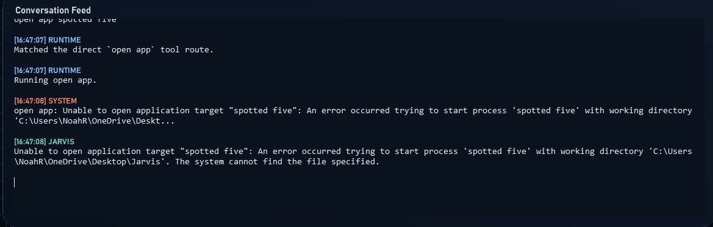
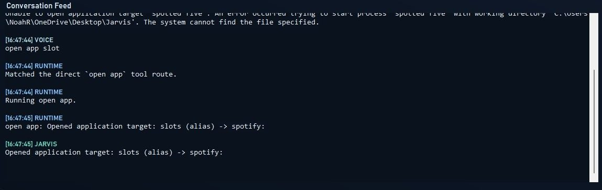
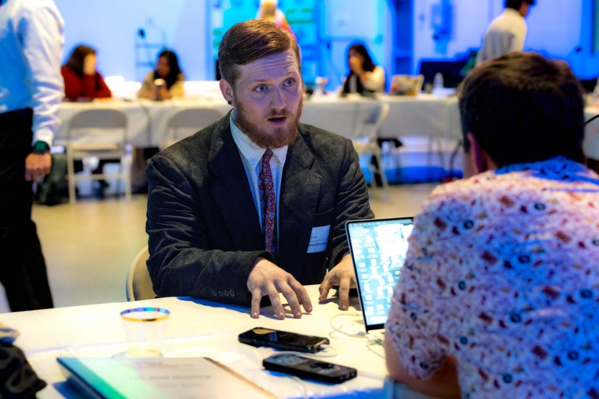

Desktop AI assistant · Spring 2026 to present
Jarvis
Jarvis is the AI assistant I keep tinkering with: an ongoing experiment in self-hosted AI, speech, memory, and desktop automation.
- Stack
- C#, .NET 8, Windows Forms, LM Studio, OpenAI-compatible APIs
- Current state
- Released as v1.0.0 with wake word, reminders, research, memory tools, and a live desktop operations surface.
- Biggest challenge
- Balancing privacy-focused local models against accuracy, latency, and structured-output reliability in the planner.
Overview
Jarvis is my own take on a desktop AI assistant, and I keep building on it. It combines a Windows Forms app, a C#/.NET 8 assistant runtime, voice input and output, memory, reminders, web research, screen-aware tooling, and desktop automation into one local Windows system.
- Multi-part application structure The project is split between Jarvis.Core for planning, memory, tool dispatch, and safety logic, plus Jarvis.App for the Windows UI, microphone pipeline, wake-word flow, and live operations surface.
- Speech and local-model experimentation Supports wake-word detection, speech recognition, text to speech, memory recall, and live assistant interaction while comparing local LM Studio models against cloud-backed OpenAI-compatible options.
- Testing and iteration The project was tested against app launching, reminders, research, screen reading, memory workflows, and automation reliability, with the project writeup documenting what worked, what broke, and why.
What it looks like





What is in v1.0.0
v1.0.0 is the first public source release, published September 21, 2026. It covers 71 source files and roughly 50,900 lines across the two main components.
- Jarvis.Core, the assistant engine A planner handling tool calling, intent routing, and reflection, with 67 assistant tools spanning files, shell, window management, browser control, media, messaging, email, Office integration, memory, reminders, research, and weather.
- Memory and automation A memory subsystem with JSON storage, semantic search, retention policies, and privacy controls, plus desktop automation through Win32 UI Automation.
- Model gateway and safety layer Compatible with OpenAI-style endpoints and local runtimes, with approval gates in front of destructive operations.
- Jarvis.App, the Windows Forms host Multiple voice runtimes including realtime transcription and Windows Speech, wake-word detection with microphone-specific DSP profiles and calibration, acoustic echo suppression, clap detection, and memory and presence workbenches with an operations HUD.
- Biggest changes in this release Speech recognition moved from a cloud provider to a local speech server, and the planner moved to a larger locally hosted model across all four roles.
- Known limitations No automated tests or CI pipeline yet, Windows only (net8.0-windows with WinForms), and full offline operation needs a local model endpoint and speech server running.
Presented to the CCI Leadership Board
In October 2026 I presented Jarvis to the Florida State College of Communication and Information Leadership Board. In the live demo it summarized an article, added an example to my lecture notes, and opened Sticky Notes to write something down for me. The question I got most was how it works, which is what this page is here to answer.

Where it can grow next
My end goal is a secure and private AI that does a lot more than my basic tasks: controlling the Bluetooth and Wi-Fi devices in my apartment, talking to it from my phone when I'm on the go, and running it on an AI model I train myself instead of LM Studio. Closer in, the next steps are more reliable structured tool use on local models, cleaner automation of modern apps, a proper installer, and calendar and email integrations.
Project materials
GitHub release
Jarvis v1.0.0 release
The tagged v1.0.0 release on GitHub, with the packaged build and release notes for the current version of the assistant.
Open releaseSlides · PPTX
Jarvis project presentation
Download the slide deck covering the architecture, the voice pipeline, local inference benchmarks, the problems I ran into, and the roadmap.
Download slidesWriteup · DOCX
Jarvis project writeup
Download the project documentation covering the design, setup process, testing results, tradeoffs, and lessons learned.
Download writeupWhy it matters
Jarvis shows that I am willing to take on a difficult project on my own, learn across several systems, and document tradeoffs honestly. It is one of the clearest examples of how I handle a bigger technical challenge.
Let's talk
Hiring for a 2027 IT internship, or want to ask about a project? Email is the fastest way to reach me.